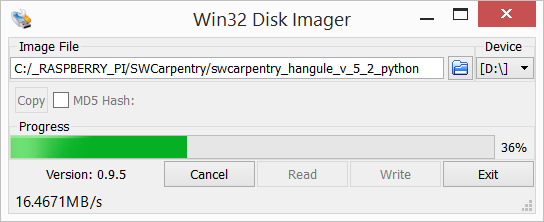
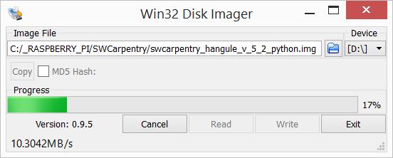

라즈베리 파이
소프트웨어 카펜트리 이미지
학습 목표
- 라즈베리 파이를 소프트웨어 카펜트리 교육에 사용할 이미지 생성
1. 소프트웨어 카펜트리란?
1.1. Ideas
- Introducing Software Carpentry
- Software Carpentry: Lessons Learned
- Best Practices for Scientific Computing
1.2. Tutorials
1.3. 대한민국 소프트웨어 카펜트리
- 파이콘 2015 라이트닝 토크
- 소프트웨어 카펜트리 교재
- 소프트웨어 카펜트리 워크샵
1.4. DIY 소프트웨어 카펜터 과정
- 소프트웨어 카펜트리 MOOC (2010)
2. 소프트웨어 카펜트리 툴체인(Tool chain)
소프트웨어 카펜트리 워크샵에는 소프트웨어 전반적인 교육을 위해서 유닉스 기반 다양한 소프트웨어가 사용된다. 이를 라즈베리 파이 라즈비언 위에 구현한다.
- 유닉스 쉘 ⇒ 작업자동화
- 윈도우에서 유닉스 쉘 대용으로 사용되는 Git Bash가 라즈비언에는 배쉬 쉘(Bash Shell)이 기본으로 장착되어 있다.
- GNU 배쉬 버젼: GNU bash, version 4.2.37
nano편집기 자동 설치됨.
- 윈도우에서 유닉스 쉘 대용으로 사용되는 Git Bash가 라즈비언에는 배쉬 쉘(Bash Shell)이 기본으로 장착되어 있다.
- Git 과 GitHub ⇒ 작업 추적과 협업
- Git도 자동으로 설치되어 있음.
git version 1.7.10.4
- Git도 자동으로 설치되어 있음.
- 파이썬, R, 매트랩 ⇒ 모듈방식 코드 작성
- 라즈베리 파이에 파이(PI, Python Interpreter)가 의미하듯이 파이썬2, 파이썬3가 자동으로 설치됨
- 파이썬 2 버젼:
Python 2.7.3 - 파이썬 3 버젼:
Python 3.2.3
- 파이썬 2 버젼:
- R 설치해야 됨
- 매트랩은 매스웍스(Mathworks)사의 사용 프로그램으로 별도로 설치해야 됨.
- 효과적인 과학기술 컴퓨팅을 위해 아나콘다(Anaconda)를 설치한다.
- Continuum Analytics 웹사이트에서 리눅스 펭귄 턱스를 클릭하여 파이썬 2, 파이썬 3 버젼에 맞춰 다운로드 한후
bash명령어로 설치한다. - 라즈베리 파이 2는 32비트 컴퓨터로 가능하면 32비트 버젼을 다운로드 받는다.
- 디렉토리를 지정하야 하는데 디폴트 기본설정으로
/home/pi/anaconda3/디렉토리가 지정된다. 만약 파이썬 2 아나콘다를 다운로드하면 기본 디렉토리가/home/pi/anaconda/로 된다. 하지만, 설치가 안된다.
- Continuum Analytics 웹사이트에서 리눅스 펭귄 턱스를 클릭하여 파이썬 2, 파이썬 3 버젼에 맞춰 다운로드 한후
- 라즈베리 파이에 파이(PI, Python Interpreter)가 의미하듯이 파이썬2, 파이썬3가 자동으로 설치됨
- SQL ⇒ 데이터 관리
sudo apt-get install sqlite3명령어를 통해서 간단히 sqlite3 데이터베이스를 설치한다.sqlite3 --version명령어를 타이핑하면3.7.13 2012-06-11 02:05:22 f5b5a13f7394dc143aa136f1d4faba6839eaa6dc결과 출력된다.
2.1. 한글화 및 웹서버 관련 소프트웨어
라즈베리 파이 기반 소프트웨어 카펜트리 교육을 위해서 한글 설정과 웹서버 및 자주 사용하는 웹브라우져를 설치한다.
- 한글 입력기
ibus를 통한 한글 설정sudo apt-get install ibus ibus-hangul명령어를 한글 입력기를 설치한다.- ibus를 설치한 후 시스템 → 입력기 화면에서
ibus를 표준입력기로 설정한다. ibus 설정에서 한국어를 설정하고 나면 키보드와 설정이 맞으면 한/영키를 누르면 한글을 입력할 수 있다.
- 웹브라우져를 통한 외부 접속을 위해 웹브라우져와 웹서버를 설치한다.
- 기본 장착된 웹브라우져가 있지만, 크롬과 불여우(얼음쪽제비)도 다음 명령어로 설치한다.
- 크롬 :
sudo apt-get install chromium - 얼음쪽제비(불여우):
sudo apt-get install iceweasel
- 크롬 :
sudo apt-get install -y apache2명령어로 아파치 웹서버를 설치한다.
- 기본 장착된 웹브라우져가 있지만, 크롬과 불여우(얼음쪽제비)도 다음 명령어로 설치한다.
pi@raspberrypi ~ $ sudo apt-get install ipython
pi@raspberrypi ~ $ sudo apt-get -y install ipython-notebook
pi@raspberrypi ~ $ sudo apt-get -y install \
python-numpy \
python-matplotlib \
python-scipy \
python-pandas \
python-sympy \
python-nose3. 소프트웨어 카펜트리 이미지 및 배포
3.1. 소프트웨어 카펜트리 이미지 생성(굽기)
라즈베리 파이를 이용한 소프트웨어 카펜트리 워크샵 소프트웨어 교육 환경을 구축했으면 이를 이미지로 만들어서 동일한 교육환경을 배포한다.
- Win32 Disk Imager를 다운로드해서 설치한다.
- 이미지를 생성하고 생성된 이미지를 마이크로 SD카드에 넣는 역할을 윈도우에서 수행하는 프로그램이다.
- USB에 마이크로 SD카드를 넣고 이미지를 저장할 파일명과 함께 디렉토리를 지정한다.
- 대략
C:/_RASPBERRY_PI/SWCarpentry/swcarpentry_hangule_v_5_2_python.img와 같다.
- 대략
- 이미지를 만들기 위해서 USB 마이크로 SD카드에서 읽어오는 것이기 때문에 Read를 클릭하면 이미지가 지정한 디렉토리에 파일명으로 생성된다.

참조: 라즈베리파이 기초 강좌 : SD메모리카드 이미지 백업하기
3.2. 소프트웨어 카펜트리 이미지 넣기
- Win32 Disk Imager를 실행한다.
- 이미지를 생성하고 생성된 이미지를 마이크로 SD카드에 넣는 역할을 윈도우에서 수행하는 프로그램이다.
- USB에 마이크로 SD카드를 넣고 SD Card Formatter를 사용해서 포맷을 한다.
- 이미지
swcarpentry_hangule_v_5_2_python.img를 찾는다. - USB 마이크로 SD카드에 이미지를 넣는 것이기 때문에 Write를 클릭하면 이미지가 설치된다.

준비 중…. ~ {.shell} pi@raspberrypi ~ $ sudo rpi-update pi@raspberrypi ~ $ wget https://3230d63b5fc54e62148e-c95ac804525aac4b6dba79b00b39d1d3.ssl.cf1.rackcdn.com/Anaconda3-2.3.0-Linux-x86.sh pi@raspberrypi ~ $ bash Anaconda3-2.3.0-Linux-x86.sh ~